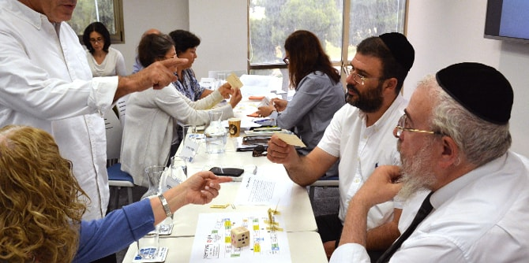
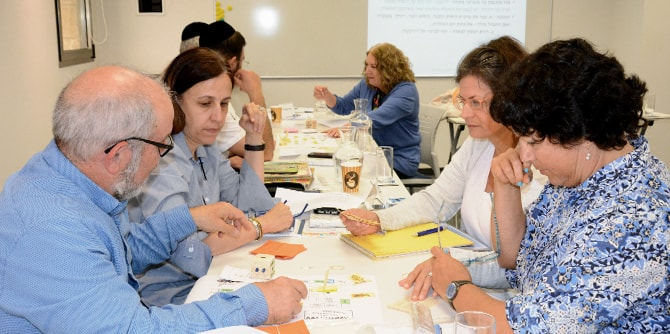

המפגש נפתח בפעילות למשתתפי הסמינר, שהעביר
ד"ר אמיר ברנע, בוגר מחזור א' של בית ספר מנדל למנהיגות חינוכית. בהשראת תוכנית ההכשרה, ברנע הגה ויצר את מסע הדירקטור – משחק לוח התומך בלמידה, בחשיבה ובפיתוח המיומנויות הנדרשות לעבודת הדירקטור העתידי. המטלות במשחק עימתו את הבוגרים עם מושגי יסוד, דילמות, מצבי חירום, קבלת החלטות וגם עם ערכים, ובאמצעותן בחנו את המיומנויות שצברו ואת בקיאותם בנלמד.

עו"ד ירון קידר, מומחה לטיפול במכלול ההיבטים המשפטיים והאסטרטגיים של ארגונים ללא כוונת רווח, הרצה על חובות הוועד המנהל, ועדת הביקורת ושינויים בחוק הנוגעים לארגונים ללא כוונת רווח. קידר הבחין בין סוגי ארגונים ללא כוונת רווח בישראל, וסקר נושאים כמו חובות המנהלים, ניגוד עניינים, פירמידת הנורמות המתווה את ההתנהלות הראויה לטובת החברה, ונושאים נוספים הקשורים בחקיקה.
רותי סרברו, יועצת בכירה לפיתוח משאבים המתמחה בליווי אסטרטגי של ארגוני המגזר השלישי, הרצתה לבוגרים על בנייה והפעלה של מערך פיתוח וגיוס משאבים: משלב ניתוח הצרכים, דרך גיבוש תוכניות ועד ליישום ולהטמעה. סרברו ציינה שגיוס ופיתוח משאבים הם תהליכים מתוכננים הנגזרים מחזון, מטרות ויעדים, והדגישה את ההכרח בשיתוף פעולה של כל בעלי התפקידים בחברה, כולל המנכ"ל וחברי הדירקטוריון, לשם בניית מערכת גיוס משאבים אפקטיבית.
לאחר ההרצאה נערך פאנל בנושא תפקידו ואחריותו של הוועד המנהל לקיימות ולגיוס משאבים לארגון בהשתתפות
יותם טולוב, מנכ"ל עמותת "בזכות" – המרכז לזכויות אדם של אנשים עם מוגבלויות, ובוגרי בית ספר מנדל למנהיגות חינוכית המשתתפים בתכנית ההכשרה:
תמר שוורץ מנכ"לית עמותת "רוח נשית" המסייעת לנשים נפגעות אלימות להגיע לעצמאות כלכלית, וגידי קפלן יו"ר עמותת "ידיד" – מרכזי זכויות בקהילה. המשתתפים הציגו את ארגוניהם, את מדיניות פיתוח המשאבים שלהם ואת אופן עבודתו של הוועד המנהל שלהם. את הפאנל הנחו רותי סרברו ורקפת מוסק, מנהלת הייעוצים ביחידת בוגרי מנדל.

{kind=link}
{kind=link}